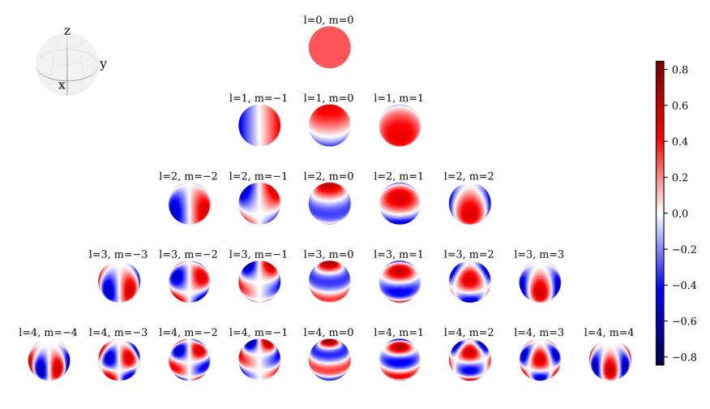
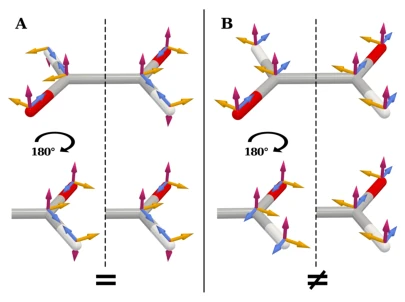

This tutorial can be regarded as the "mathematical translator" in the field of geometric deep learning. The authors did not invent new models, but rather translated mathematical tools such as group theory and representation theory, which are daunting for beginners, into "human language" understandable by engineers. The highlight lies in connecting the irreducible representations of SO(3), spherical harmonics, and Clebsch-Gordan decomposition into a thread, explaining why current Equivariant GNNs look like this. However, the complaints are also obvious: as a tutorial, it relies too much on mathematical derivation; for RL engineers who only want to tune parameters, the reading threshold is comparable to gnawing on "Quantum Mechanics". Moreover, it mainly focuses on rotational equivariance, briefly mentioning reflection and more complex Euclidean symmetries; when encountering complex physical constraints in practice, relying on this alone may not be enough. However, for those who want to understand the underlying logic of e3nn or MACE, this is definitely a must-read "Bible"; although it reads like reading a paper rather than a tutorial, it indeed bridges the gap between different formal languages.
The core motivation is to solve the data waste problem caused by "coordinate system arbitrariness". In physics and 3D vision, physical properties remain unchanged after object rotation, but standard neural networks treat rotated coordinates as new samples, causing the model to repeatedly learn the same geometric patterns [1-4]. Existing methods either use data augmentation to approximate equivariance (such as AlphaFold 3 [33]) or use complex group convolutions, but lack a unified perspective. This paper points out that many scientific machine learning tasks (such as quantum mechanics, meteorology) lack closed-form equations and require data-driven surrogate models, while enforcing known symmetries can significantly improve data efficiency and physical consistency [10-12]. Especially for the stability of long-term simulations, constructing precise equivariant architectures is more important than post-hoc correction [15, 16]. Existing resources such as Duval et al. [4] or Kondor [17] are good, but either too broad or too abstract, lacking a derivation from scratch for 3D rotational equivariance, causing practitioners to get lost between different formal languages [18].
The overall framework starts from geometric intuition, gradually builds mathematical tools, and finally lands on architecture design. First, Euclidean Graph and Message Passing are introduced as a foundation [3] to ensure translation and permutation invariance. The core innovation lies in concretizing Group Representations into mathematical tools for SO(3): using Spherical Harmonics as irreducible representation bases, and describing transformations under rotation via Wigner-D matrices [6]. The key step is the Clebsch-Gordan decomposition of tensor products, decomposing reducible Cartesian tensors into irreducible spherical tensors, thereby controlling feature dimension explosion while maintaining equivariance [5, 28]. At the architecture level, the paper compares three strategies: (1) Group Convolutions, utilizing regular representations; (2) Internal Tensorial Representations, such as e3nn [13] and MACE [5], ensuring inter-layer equivariance by tracking representation types of features; (3) Canonicalization-based methods, eliminating rotational degrees of freedom by fixing local or global coordinate systems [7]. Finally, practical limitations are discussed, such as computational complexity (optimization of CG product from O(L^6) to O(L^3)) and reflection handling.

Figure 2. Visualization of the lowest-degree real spherical harmonics Y R lm as functions on the sphere. For m = 0 the harmonics are axially symmetric around the z-axis, while for m ̸= 0 they have a characteristic cos(mϕ)- or sin(mϕ)-type angular dependence in the xy-plane. The degree l determines the number of nodal lines (circles where the function changes sign).

Figure 3. Local vs. global canonicalization of a molec- ular geometry. Left: Local canonicalization with distinct local frames constructed from nearest-neighbor directions. The left and right molecular substructures, which differ only by a 180◦rotation, are equivalent under local canonicaliza- tion. Right: Under global canonicalization, all “local” frames are identical. Consequently, identical local substructures ap- pearing in different orientations are not treated equivalently. While both approaches achieve global equivariance, only local canonicalization also realizes local equivariance.
实验Experiments
严格来说，本文作为教程并未提出新模型或进行独立实验。它主要通过综述现有 SOTA 方法（如 MACE [5], EquiformerV2 [6], e3nn [13]）的理论基础来验证方法的有效性。文中引用了多项工作表明，等变模型在数据效率上优于非等变模型，例如在分子力场预测中达到更高精度且样本需求更少 [13, 14]。在稳定性方面，构建物理一致的等变网络能避免长时模拟的发散 [15, 16]。论文还讨论了计算瓶颈，指出 Clebsch-Gordan 乘积的复杂度曾是 O(L^6)，但近期工作已优化至 O(L^3) [31]。虽然缺乏新数据，但通过对比不同形式化语言（如群论 vs 张量网络）的等价性，证明了统一视角的必要性。对于实践者，它提供了选择架构的权衡指南，而非具体的性能榜单，更多是理论上的“可行性证明”。
Strictly speaking, this paper as a tutorial did not propose new models or conduct independent experiments. It mainly validates the effectiveness of the method by reviewing the theoretical foundations of existing SOTA methods (such as MACE [5], EquiformerV2 [6], e3nn [13]). The text cites multiple works indicating that equivariant models outperform non-equivariant models in data efficiency, for example achieving higher accuracy and requiring fewer samples in molecular force field prediction [13, 14]. In terms of stability, constructing physically consistent equivariant networks can avoid divergence in long-term simulations [15, 16]. The paper also discusses computational bottlenecks, pointing out that the complexity of Clebsch-Gordan products was once O(L^6), but recent work has optimized it to O(L^3) [31]. Although lacking new data, it proves the necessity of a unified perspective by comparing the equivalence of different formal languages (such as group theory vs tensor networks). For practitioners, it provides a trade-off guide for selecting architectures, rather than a specific performance leaderboard, more of a theoretical "feasibility proof".